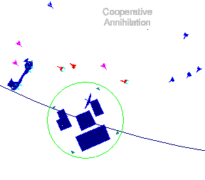

Economic
Model
Economic
Model
The economic model governs the flow of materials
in Gravity Well. This model describes how materials are manufactured, transported,
and consumed. This process is completely automated in the game, requiring
no user interaction. The relationships between the units are shown here
only to provide a deeper understanding of the mechanisms in place.
Unit construction is an important role of the
Tech Center/Base and Space Dock/Starbase complexes, and of the Freighter,
which is the primary vehicle for colonization. The constructor unit must
have enough finished materials available to construct the new unit. A new
unit will only be constructed if no other unit of that type is present,
either on the planet or in orbit, as appropriate. Thus, in the case of
freighters, as soon as a freighter leaves orbit on a mission, a new one
will be created if their are no other freighters present and materials
are available.

Base
- Converts raw materials to finished materials.
- Repairs itself from its own stores of finished
materials.
- Constructs Lab from finished materials.
- Constructs Comm Center from finished materials.
Colony
- Supplies the Base it accompanies with raw materials.
- Repairs from the Base it accompanies using finished
materials.
- Supplies the Starbase in orbit with raw materials.
- Supplies orbiting freighters with raw materials.
Comm Center
- Repairs itself from the stores of the Base it
accompanies, consuming finished materials.
Fighter
- Repairs from a Base if dirtside. Consumes finished
materials
- Repairs from a Starbase if docked. Consumes finished
materials.
Freighter
- Supplies Starbase with raw materials.
- Repairs from a Starbase it is orbiting with,
using finished materials.
- Supplies Base it is orbiting with raw materials
if no Colony is present.
- Loads raw materials from Colony it is orbiting.
- Repairs from a Base it is orbiting. Consumes
finished materials.
- Constructs Base. The cargo holds must be full
and construction consumes the freighter.
- Constructs Colony. The cargo holds must be full
and construction consumes the freighter. Colonies can only be constructed
on green planets.
- Constructs Starbase. The cargo holds must be
full and construction consumes the freighter.
- Resupply outposts with no colonial facilities.
- Can be used for in-flight repairs and shield
restoration. HIGHLY dangerous maneuver. Match heading and speed of freighter
then slowly move through the freighter. If the freighter changes orders,
the captain of the vessel may order a course change during in-flight repair.
This usually causes the destruction of both vessels.
Starbase
- Converts raw materials to finished materials.
- Repairs itself from its own stores of finished
materials.
- Constructs Space Dock using finished materials.
- Constructs Sensor Array using finished materials.
Tech Center
- Repairs from the stores of the Base it accompanies.
Consumes finished materials.
- Constructs Fighter from finished materials of
the Base it accompanies.
- Constructs Freighter from finished materials
of the Base it accompanies.
Sensor Array
- Repairs from the Starbase it is attached to,
consuming finished materials.
Space Dock
- Repairs from the Starbase it is attached to,
consuming finished materials.
- Constructs Fighter from finished materials of
the Starbase it accompanies.
- Constructs Freighter from finished materials
of the Starbase it accompanies.